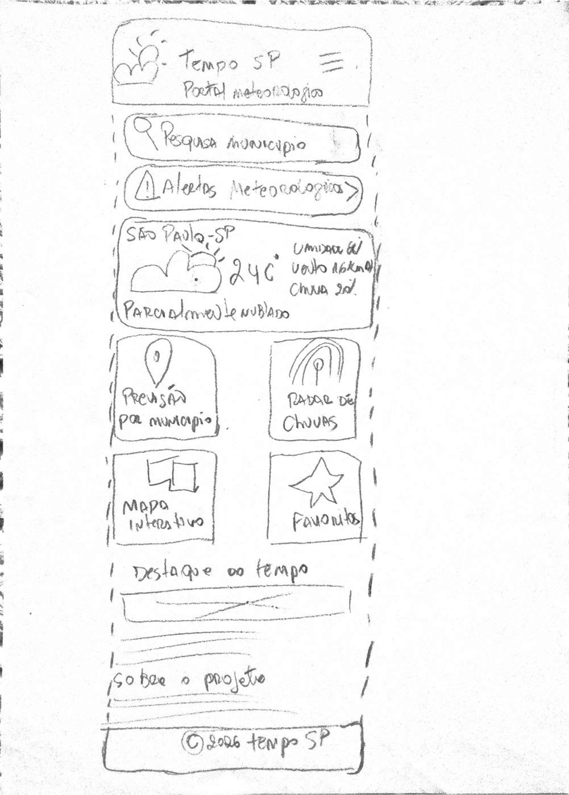
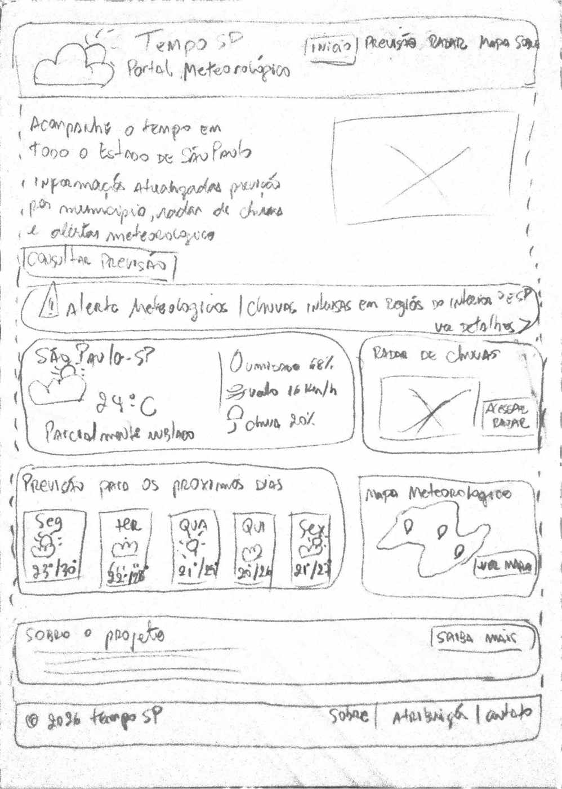

Azul escuro
#0F2742
Cabeçalho, rodapé, títulos e textos.
Portal de Monitoramento Meteorológico do Estado de São Paulo
Planejamento do Site — WDD231
O nome Tempo SP foi escolhido por representar de maneira clara, objetiva e intuitiva a finalidade do projeto: oferecer informações meteorológicas sobre os municípios do estado de São Paulo.
A palavra "Tempo" está diretamente relacionada às condições atmosféricas, enquanto a sigla "SP" identifica a região geográfica abrangida pela plataforma. O nome é curto, de fácil memorização e adequado à identidade de um portal meteorológico.
O Tempo SP tem como finalidade disponibilizar informações meteorológicas atualizadas sobre os municípios do estado de São Paulo, auxiliando a população no planejamento de suas atividades diárias e no acompanhamento das condições atmosféricas.
A plataforma apresentará uma interface moderna, acessível, interativa e responsiva, permitindo consultar informações meteorológicas em computadores, tablets e smartphones.
Os dados meteorológicos serão obtidos por meio de fontes externas, como a API Open-Meteo. A integração com o radar meteorológico do IPMet/Unesp dependerá da disponibilidade técnica e da autorização de uso. Caso não seja possível realizar a integração direta, será disponibilizado um link para o radar oficial.
O site será destinado aos moradores do estado de São Paulo, estudantes, trabalhadores, agricultores, viajantes e demais pessoas interessadas em acompanhar as condições meteorológicas da região.
Os seguintes cenários representam possíveis dúvidas dos usuários que acessarão o Tempo SP:
A identidade visual do Tempo SP utilizará tons de azul, branco e cinza claro, representando o céu, a atmosfera, a tecnologia e a confiabilidade das informações meteorológicas.
#0F2742
Cabeçalho, rodapé, títulos e textos.
#1565C0
Links, subtítulos, botões e destaques.
#F1F5F9
Plano de fundo da página.
#FFFFFF
Cartões, seções e textos sobre fundos escuros.
Serão utilizadas duas famílias tipográficas, selecionadas por sua legibilidade, aparência moderna e adaptação a diferentes tamanhos de tela.
Tempo SP — Monitoramento Meteorológico
Aplicação: títulos, subtítulos, cabeçalhos e elementos de destaque.
Acompanhe as condições meteorológicas do estado de São Paulo.
Aplicação: parágrafos, informações meteorológicas, menus, formulários e demais conteúdos textuais.
Os wireframes apresentam o planejamento estrutural da página inicial do Tempo SP em dispositivos móveis e computadores, considerando a organização dos elementos, a navegação e a responsividade.


Apresentará o panorama meteorológico do estado, informações atuais, destaques, alertas e acesso às principais funcionalidades do portal. Também apresentará informações sobre o projeto.
Permitirá pesquisar municípios, consultar previsões, visualizar informações meteorológicas detalhadas e armazenar localidades favoritas.
Apresentará informações sobre precipitações, monitoramento de chuvas, mapas e acesso às fontes meteorológicas oficiais.
O projeto também contará com uma página para exibição dos dados enviados pelo formulário de pesquisa ou cadastro de preferências e uma página de atribuições das fontes utilizadas.
Serão apresentados dinamicamente pelo menos 15 municípios paulistas, contendo informações como temperatura, umidade, velocidade dos ventos e condições meteorológicas.